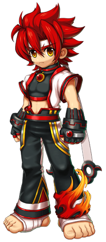

No link abaixo há o livro chamado "long live the chase" que foi escrito por fãs em homenagem a essa campanha que havia sido feita quando a empresa dona dos direitos do jogo já havia anunciado o fechamento
Livro long live the chase
No link abaixo você consegue acessar diversas histórias em quadrinhos feitas por fãs, cada uma com um enredo que vai te entreter cada vez mais
Quadrinhos
Já no link abaixo você consegue acessar informações especificas sobre cada um dos personagens do jogo, relacionadas a história deles dentro do enredo e até as falas do personagem dentro do jogo
PersonagensTodas as coisas acima e muito mais podem ser acessadas diretamente no próprio site, resolvi destacar essas 3 primeiras porque achei os conteúdos bem legais
Fandom